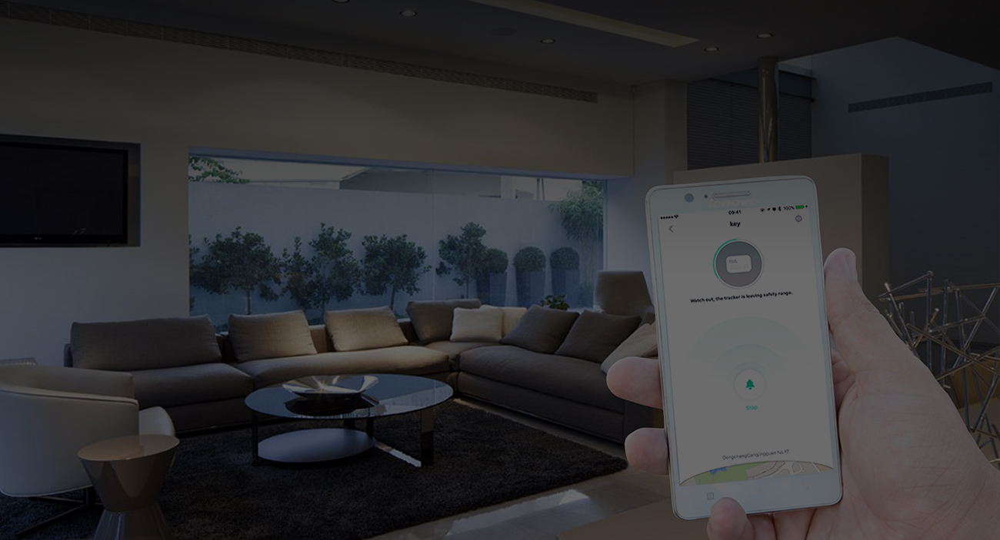
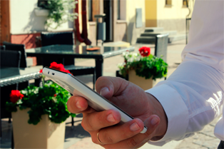
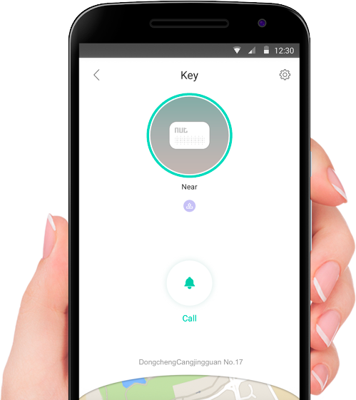
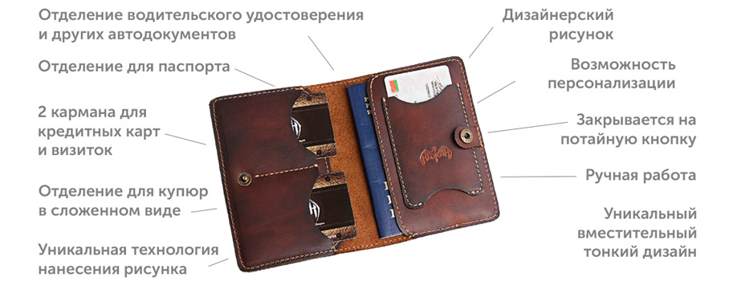
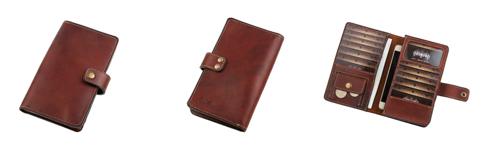
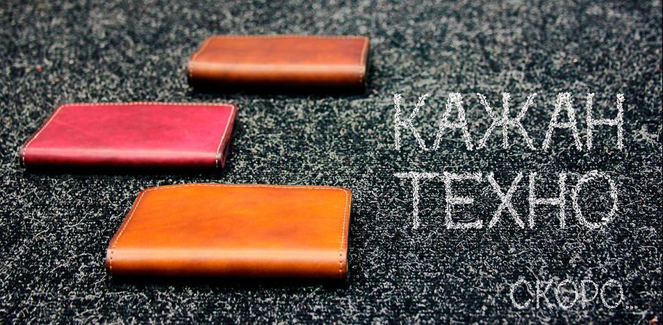
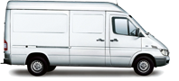
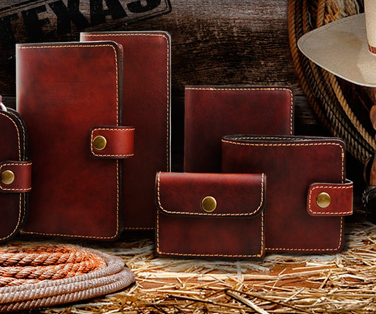

<!doctype html><html class="no-js" lang=""><head><meta charset="utf-8"><meta name="description" content=""><meta name="viewport" content="width=device-width,initial-scale=1"><title>USER</title><link rel="apple-touch-icon" href="apple-touch-icon.png"><link rel="stylesheet" href="styles/main.css"><!-- endbuild --><!-- build:js scripts/vendor/modernizr.js --><script src="/bower_components/modernizr/modernizr.js"></script><!-- endbuild --></head><body><div class="wrapper"><section class="st0"><form action="#"><h4>Консультация</h4><p>Заполните форму и мы перезвоним вам в течение 15 минут</p><input class="inputtext" type="text" name="name-pop" value="" placeholder="Имя*"> <input class="inputtext" type="tel" name="hpone-pop" value="" placeholder="Телефон*"> <input class="button" type="submit" name="submit" value="Бесплатная консультация"></form></section><section class="st1 section"><div class="container container-1"><div class="logo"></div><div class="contacts"><p>+375 (33) 66 77 855</p><p>Пн.-пт. 8:30 — 17:00</p></div><div class="buttons"><button class="button">Консультация по телефону</button> <button class="button">Каталог кошельков</button> <button class="button">Онлайн-консультант</button> <button class="button">Заказать кошелек</button></div></div></section><section class="st2 section"><div class="container container-2"><h1>Умный кошелек <span>новинка 2016</span></h1><div class="previous"><p>Кошелек с защитой от потери и кражи</p><p>Благодаря встроенному модулю беспроводной связи вы всегда будете знать где ваш кошелек</p><p></p></div></div></section><section class="st3 section"><div class="container-3"><ul class="rslides"><li></li><li></li><li></li></ul></div></section><section class="st4 section"><div class="container-4"><h3>Внимание! Акция!</h3><form class="buttons" action="index.html" method="post"><input class="inputtext" type="text" name="name" value="" placeholder="Имя*"> <input class="inputtext" type="tel" name="hpone" value="" placeholder="Телефон*"> <input class="inputtext" type="email" name="E-mail" value="" placeholder="E-mail"> <input class="button" type="submit" name="submit" value="Получить скидку!"></form></div></section><section class="st5 section"><div class="container container-5"><h2 class="h2">Чем полезен умный кошелек?</h2><div class="content-5"><div class="text"><p class="koshelek">Тысячи людей каждый день расстаются со своими деньгами, кредитками и документами.</p><p class="badsmile">Это происходит по разным причинам — они становятся жертвами краж, забывают или теряют свои кошельки.</p><p class="border-p">Мы создали умный кошелек, чтобы избавить вас от этих проблем — благодаря современным технологиям вы всегда будете знать, где находится ваш кошелек!</p><ul class="smile"><li class="main">Умный кошелек будет особенно полезен, если Вы:</li><li>Нередко выходите из дома без денег, в спешке забывая кошелек дома.</li><li>Часто беспокойно нащупываете бумажник в кармане боясь потери или кражи.</li><li>Любите оставлять бумажник в магазинах, кафе или барах.</li><li>Просто хотите чувствовать себя более спокойно и уверенно.</li></ul></div><div class="images">  </div></div></div></section><section class="st6 section"><div class="container-6"><h2 class="h2">Как это работает?</h2><div class="text"><p class="smallWifi pgmimg">Кошелек оборудован микрочипом с модулем беспроводной связи bluetooth</p><p class="mobile pgmimg">После установки бесплатного приложения ваш смартфон устанавливает связь с кошельком</p><p class="binokle pgmimg">Смартфон в режиме реального времени отслеживает где находится ваш кошелек</p><p class="budilnik pgmimg">В случае, если вы отдалились от кошелька на некоторое расстояние смартфон подаст сигнал об этом</p><p class="dindon pgmimg">В кошелек встроен динамик, который издает сигнал для удобства поиска</p></div><div class="bgvideo"><div class="video"><iframe src="https://www.youtube.com/embed/xKuXTtz1k3o" allowfullscreen></iframe><div class="buttons"><button class="button button2">Остались вопросы. Проконсультироваться</button> <button class="button">Все понятно. Сделать заказ</button></div></div></div></div></section><section class="st7 section"><div class="container container-7"><h2 class="h2">Технические характеристики</h2><ul class="characteristics"><li class="characteristic-1">Радиус поиска от 5 до 50 метров в зависимости от наличия преград.</li><li class="characteristic-2">Работает без подзарядки 100 дней. Удобная замена батарейки.</li><li class="characteristic-3">Громкость звукового сигнала 90 dB.</li><li class="characteristic-4">Приложение совместимо с iOS 7.0+ и Android 4.3+</li><li class="characteristic-5">Энергосберегающий модуль беспроводной связи Bluetooth® 4.0 Low Energy.</li></ul></div></section><section class="st8 section"><div class="container-8"><div id="carousel-example-generic" class="carousel slide" data-ride="carousel"><!-- Маркеры слайдов --><ol class="carousel-indicators"><li data-target="#carousel-example-generic" data-slide-to="0" class="active"></li><li data-target="#carousel-example-generic" data-slide-to="1"></li><li data-target="#carousel-example-generic" data-slide-to="2"></li><li data-target="#carousel-example-generic" data-slide-to="3"></li><li data-target="#carousel-example-generic" data-slide-to="4"></li></ol><!-- Содержимое слайдов --><div class="carousel-inner"><div class="item active"><div class="container container-8"><div class="content"><h3>Мобильное приложение для умного кошелька</h3><div class="text"><p>It is important to care more about your family member's safety. We need to know where our parents, lovers and kids are to make sure they are safe. You can easily achieve that with Nut app.</p><p>The Nut app works together with the Nut smart tracker. Bind your Nut smart tracker with your important items.</p></div></div></div></div><div class="item"><div class="container container-8"><div class="content"><h3>Мобильное приложение для умного кошелька</h3><div class="text"><p>It is important to care more about your family member's safety. We need to know where our parents, lovers and kids are to make sure they are safe. You can easily achieve that with Nut app.</p><p>The Nut app works together with the Nut smart tracker. Bind your Nut smart tracker with your important items.</p></div></div></div></div></div></div></div></section><section class="st9 section"><div id="carousel2" class="carousel slide" data-ride="carousel"><!-- Маркеры слайдов --><ol class="carousel-indicators"><li data-target="#carousel2" data-slide-to="0" class="active"></li><li data-target="#carousel2" data-slide-to="1"></li></ol><!-- Содержимое слайдов --><div class="carousel-inner"><div class="item active section"><div class="container container-9"><h2 class="h2">Истории от владельцев умных кошельков</h2><div class="content"><div class="text"><p>Умный бумажник уже выручил меня однажды. Это была почти детективная история. Я ужинал в кафе, отошел позвонить и вернувшись не нашел свой бумажник. Я включил приложение для поиска. Трекер показывал сигнал средней силы, бумажник был где-то в пределах помещения. Я подошел к группе официантов и спросил, не видели ли они мой кошелек, они ответили, что не видели. В этот момент один из официантов отделился от группы и начал удаляться — сигнал на трекере стал слабеть, я понял, что бумажник у него. уверенно подошел к нему и сказал "Я знаю мой бумажник у вас".... Не вникая в детали разбирательств с администрацией, отмечу, что в конечном счете я вернул свой бумажник отделавшись лишь неприятными эмоциями.</p></div></div></div></div><div class="item section"><div class="container container-9"><h2 class="h2">Истории от владельцев умных кошельков</h2><div class="content"><div class="text"><p> Умный бумажник уже выручил меня однажды. Это была почти детективная история. Я ужинал в кафе, отошел позвонить и вернувшись не нашел свой бумажник. Я включил приложение для поиска. Трекер показывал сигнал средней силы, бумажник был где-то в пределах помещения. Я подошел к группе официантов и спросил, не видели ли они мой кошелек, они ответили, что не видели. В этот момент один из официантов отделился от группы и начал удаляться — сигнал на трекере стал слабеть, я понял, что бумажник у него. уверенно подошел к нему и сказал "Я знаю мой бумажник у вас".... Не вникая в детали разбирательств с администрацией, отмечу, что в конечном счете я вернул свой бумажник отделавшись лишь неприятными эмоциями.</p></div></div></div></div></div></div></section><section class="st10 section"><div class="container-10 container"><h2 class="h2">Выберите смарт-кошелек на свой вкус</h2><div class="content"><!-- Навигация --><ul class="nav nav-tabs" role="tablist"><li class="active"><a href="#mini" aria-controls="mini" role="tab" data-toggle="tab">Mini</a></li><li><a href="#midi" aria-controls="midi" role="tab" data-toggle="tab">Midle</a></li><li><a href="#maxi" aria-controls="maxi" role="tab" data-toggle="tab">Maxi</a></li><li><a href="#persnal" aria-controls="persnal" role="tab" data-toggle="tab">Персонализация</a></li><li><a href="#fishki" aria-controls="fishki" role="tab" data-toggle="tab">Фишки</a></li><li><a href="#blog" aria-controls="blog" role="tab" data-toggle="tab">Блог</a></li></ul><!-- Содержимое вкладок --><div class="tab-content"><div role="tabpanel" class="tab-pane active" id="mini"><div class="mini"> <form action="#" class="zakaz"><div class="radio"><label class="radioLabel">Выберите цвет:</label><input type="radio" id="radio1" name="color" value="1"><label class="forRadio radio1" for="radio1"></label><input type="radio" id="radio2" name="color" value="2"><label class="forRadio radio2" for="radio2"></label><input type="radio" id="radio3" name="color" value="3"><label class="forRadio radio3" for="radio3"></label></div><label for="secondName">Введите надпись:<input class="inputtext" type="text" name="secondName" value="" placeholder="Нанесите свою надпись"></label><input class="button" type="submit" value="Заказать выбранный кошелек"></form></div></div><div role="tabpanel" class="tab-pane" id="midi"></div><div role="tabpanel" class="tab-pane" id="maxi">...</div><div role="tabpanel" class="tab-pane" id="persnal"><div class="personal"><div class="personal-text"><p>Пример текстового блока. Высота всего блока зависит от количества контента в разделе. То есть может менятся. Пример текстового блока. Высота всего блока зависит от количества контента в разделе. То есть может менятся. Пример текстового блока. Высота всего блока зависит от количества контента в разделе. То есть может менятся. Пример текстового блока. Высота всего блока зависит от количества контента в разделе. То есть может менятся. Пример текстового блока. Высота всего блока зависит от количества контента в разделе. То есть может менятся. Пример текстового блока. Высота всего блока зависит от количества контента в разделе. То есть может менятся. Пример текстового блока. Высота всего блока зависит от количества контента в разделе. То есть может менятся. Пример текстового блока. Высота всего блока зависит от количества контента в разделе. То есть может менятся. Пример текстового блока. Высота всего блока зависит от количества контента в разделе. Пример текстового блока. Высота всего блока зависит от количества контента в разделе. То есть может менятся.</p><p> Пример текстового блока. Высота всего блока зависит от количества контента в разделе. То есть может менятся. Пример текстового блока. Высота всего блока зависит от количества контента в разделе. То есть может менятся. Пример текстового блока. Высота всего блока зависит от количества контента в разделе. То есть может менятся. Пример текстового блока. Высота всего блока зависит от количества контента в разделе. То есть может менятся. Пример текстового блока. Высота всего блока зависит от количества контента в разделе. То есть может менятся. Высота всего блока зависит от количества контента в разделе. То есть может менятся. Пример текстового блока. Высота всего блока зависит от количества контента в разделе.</p></div></div></div><div role="tabpanel" class="tab-pane" id="fishki"></div><div role="tabpanel" class="tab-pane" id="blog"><div class="blog"><div class="post"><div class="text"><h3>Заголовок статьи</h3><p> Первый абзац статьи. Первый абзац статьи. Первый абзац статьи. Первый абзац статьи. Первый абзац статьи. Первый абзац статьи. Первый абзац статьи. Первый абзац статьи. Первый абзац статьи. Первый абзац статьи. Первый абзац статьи...<br><a href="#">Читать полностью...</a></p></div></div><div class="post"><div class="text"><h3>Заголовок статьи</h3><p> Первый абзац статьи. Первый абзац статьи. Первый абзац статьи. Первый абзац статьи. Первый абзац статьи. Первый абзац статьи. Первый абзац статьи. Первый абзац статьи. Первый абзац статьи. Первый абзац статьи. Первый абзац статьи...<br><a href="#">Читать полностью...</a></p></div></div><div class="post"><div class="text"><h3>Заголовок статьи</h3><p> Первый абзац статьи. Первый абзац статьи. Первый абзац статьи. Первый абзац статьи. Первый абзац статьи. Первый абзац статьи. Первый абзац статьи. Первый абзац статьи. Первый абзац статьи. Первый абзац статьи. Первый абзац статьи...<br><a href="#">Читать полностью...</a></p></div></div></div></div></div></div></div></section><section class="st11 section"><div class="container11 container"><h2 class="h2">Оплата и доставка</h2><div class="content"><ul class="nav nav-tabs" role="tablist"><li class="active"><a href="#belpost" aria-controls="belpost" role="tab" data-toggle="tab"></a></li><li><a href="#marik" aria-controls="marik" role="tab" data-toggle="tab"></a></li></ul><div class="tab-content"><div role="tabpanel" class="tab-pane active" id="belpost"><p>Наложенным платежом по почте. Вы оплачиваете товар при получении его в отделении почтовой связи.</p><p>Мы отправляем товар на следующий день после оформления заказа.</p><p>Сроки почтовой доставки от одного дня до 1 недели</p><p>Получая заказ, проверьте его качество и комплектность. При обнаружении брака покупатель имеет право требовать заменить товар.</p><p>Стоимость доставки почтой - 5 рублей, курьером 7 рублей (при наличии офиса курьерской службы у Вас в городе)</p></div><div role="tabpanel" class="tab-pane" id="marik"><p>Наложенным платежом по почте. Вы оплачиваете товар при получении его в отделении почтовой связи.</p><p>Мы отправляем товар на следующий день после оформления заказа.</p><p>Сроки почтовой доставки от одного дня до 1 недели</p></div></div></div></div></section><section class="st12 section"><div id="carousel3" class="carousel slide" data-ride="carousel"><!-- Маркеры слайдов --><ol class="carousel-indicators"><li data-target="#carousel3" data-slide-to="0" class="active"></li><li data-target="#carousel3" data-slide-to="1"></li></ol><!-- Содержимое слайдов --><div class="carousel-inner"><div class="item active section"><div class="container-12 container"><h2 class="h2">О компании "Кажан"</h2><div class="content"><div class="text"><p> Стильные изделия из натуральной кожи всегда в моде, особенно если они сделаны руками мастера, передают его неповторимый почерк и тепло рук. Кожаные изделия ручной работы – это подходящий подарок, как для близкого человека, так для начальника или партнера по бизнесу, который обязательно оценят по достоинству. Наша компания с 2009 года представляет в Беларуси изделия своих мастеров, в разных жанрах и исполнениях. Вы найдете в нашем магазине строгие мужские коллекции из кожи, портмоне, ежедневники, визитницы, папки, обложки на паспорт, ключницы и многое другое.</p></div></div></div></div><div class="item section"><div class="container container-12"><h2 class="h2">О компании "Кажан"</h2><div class="content"><div class="text"><p> Стильные изделия из натуральной кожи всегда в моде, особенно если они сделаны руками мастера, передают его неповторимый почерк и тепло рук. Кожаные изделия ручной работы – это подходящий подарок, как для близкого человека, так для начальника или партнера по бизнесу, который обязательно оценят по достоинству. Наша компания с 2009 года представляет в Беларуси изделия своих мастеров, в разных жанрах и исполнениях. Вы найдете в нашем магазине строгие мужские коллекции из кожи, портмоне, ежедневники, визитницы, папки, обложки на паспорт, ключницы и многое другое.</p></div></div></div></div></div></div></section><section class="st13 section"><div class="container-13 container"><h2 class="h2">Бесплатный образец кожи</h2><p>Убедитесь сами в высоком качестве материалов для вашего бумажника Оставьте ваши контакты и получите бесплатно образец кожи и выберите цвет вашего будущего кошелька.</p><div class="st13lable"></div><form action="#"><input class="inputtext" type="text" name="name" value="" placeholder="Имя*"> <input class="inputtext" type="text" name="phone" value="" placeholder="Телефон*"> <input class="inputtext" type="text" name="email" value="" placeholder="E-mail*"><textarea class="inputtext" name="adress" rows="2" cols="35" placeholder="Адрес доставки: индекс, населенный пункт, улица, дом, квартира."></textarea><input class="button" type="submit" name="submit" value="Заказать образец"></form></div></section><section class="st14 section"><div class="container-14 container"><h2 class="h2">Контактная информация</h2><p>Для связи с нами воспользуйтесь указанными телефонами или заполните форму на сайте.</p><div class="contacts"><p>+375 (33) 66 77 855</p><p><a href="#">Бесплатная консультация</a></p><p><a href="#">Оформить заказ</a></p><address>ИП Гаврилюк С.В., УНП 591171283,<br>Гродно, пер. Пороховой, 3, кв. 58<br><br>Действительно от 19.01.2015,<br>Администрацией Октябрьского района,<br>г. Гродно</address></div><div class="logo"></div><address class="adaptive"><p>ИП Гаврилюк С.В., УНП 591171283,<br>Гродно, пер. Пороховой, 3, кв. 58</p><p>Действительно от 19.01.2015,<br>Администрацией Октябрьского района,<br>г. Гродно</p></address></div></section></div><script src="/bower_components/jquery/dist/jquery.js"></script><script src="scripts/main.js"></script><script src="scripts/bootstrap.min.js"></script><!-- endbuild --><script src="scripts/responsiveslides.min.js"></script><script>$(function() {
        $(".rslides").responsiveSlides();
      });</script><script>$(".rslides").responsiveSlides({
        nav: true  // Boolean: Show navigation, true or false
      });</script></body></html>